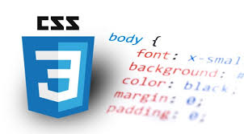
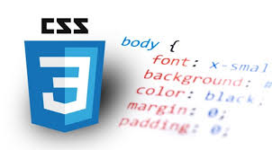

HTML History |
HTML was originally developed by a man named Tim Berners-Lee while at CERN. While working at CERN, he became frustrated at having to log on to different computers to find different information and thought that there must be a better way. He figured that there must be a way to hop from one set of information to another thats on different computers. This concept of a hyper-text system (connected with the networking technology and protocols needed to pass information between computers) would go on to form the basis for the fundamental language of the world wide web -- HTML |
CSS History |
CSS was first proposed by Håkon Wium Lie on October 10, 1994. At the time, Lie was working with Tim Berners-Lee at CERN. ... Style sheets have existed in one form or another since the beginnings of Standard Generalized Markup Language (SGML) in the 1980s, and CSS was developed to provide style sheets for the web. |
JavaScript History |
JavaScript was created by Brendan Eich in 1995 during his time at Netscape Communications. It was inspired by Java, Scheme and Self. Netscape, for a time, made the best browser in the world and enjoyed market dominance. Sun began development of Java in 1990 in an attempt to write a language for “smart appliances”. |
 
